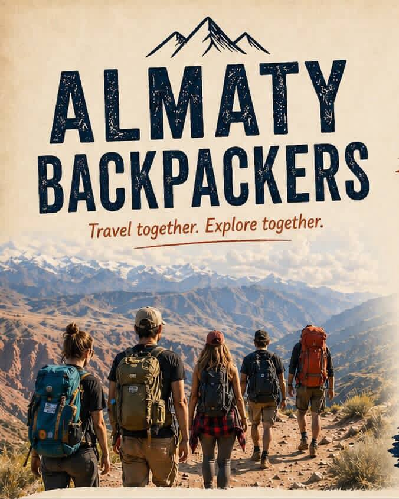

<!DOCTYPE html>
<html lang="ru">
<head>
  <meta charset="UTF-8">
  <meta name="viewport" content="width=device-width, initial-scale=1.0, maximum-scale=1.0, user-scalable=no">
  <title>Backpackers Guide</title>
  
  <!-- Tailwind CSS -->
  <script src="https://cdn.tailwindcss.com"></script>
  
  <!-- React & ReactDOM -->
  <script src="https://unpkg.com/react@18/umd/react.production.min.js" crossorigin></script>
  <script src="https://unpkg.com/react-dom@18/umd/react-dom.production.min.js" crossorigin></script>
  
  <!-- Babel -->
  <script src="https://unpkg.com/@babel/standalone/babel.min.js"></script>

  <style>
    body { -webkit-tap-highlight-color: transparent; }
    @keyframes fadeIn { 
      from { opacity: 0; transform: translateY(10px); } 
      to { opacity: 1; transform: translateY(0); } 
    }
    .animate-in { animation: fadeIn 0.4s ease-out forwards; }
    .pb-safe { padding-bottom: env(safe-area-inset-bottom, 24px); }
    
    /* Плавное открытие аккордеона */
    .accordion-content {
      transition: max-height 0.3s ease-in-out, opacity 0.3s ease-in-out;
      max-height: 0;
      opacity: 0;
      overflow: hidden;
    }
    .accordion-content.open {
      max-height: 1000px;
      opacity: 1;
    }
  </style>
</head>
<body class="bg-gray-50 text-gray-900 font-sans selection:bg-indigo-100 antialiased">
  <div id="root"></div>

  <script type="text/babel">
    const { useState, useEffect } = React;

    // --- Иконки ---
    const IconHome = ({className}) => <svg className={className} xmlns="http://www.w3.org/2000/svg" width="24" height="24" viewBox="0 0 24 24" fill="none" stroke="currentColor" strokeWidth="2" strokeLinecap="round" strokeLinejoin="round"><path d="m3 9 9-7 9 7v11a2 2 0 0 1-2 2H5a2 2 0 0 1-2-2z"/><polyline points="9 22 9 12 15 12 15 22"/></svg>;
    const IconMap = ({className}) => <svg className={className} xmlns="http://www.w3.org/2000/svg" width="24" height="24" viewBox="0 0 24 24" fill="none" stroke="currentColor" strokeWidth="2" strokeLinecap="round" strokeLinejoin="round"><polygon points="3 6 9 3 15 6 21 3 21 18 15 21 9 18 3 21"/><line x1="9" x2="9" y1="3" y2="18"/><line x1="15" x2="15" y1="6" y2="21"/></svg>;
    const IconBus = ({className}) => <svg className={className} xmlns="http://www.w3.org/2000/svg" width="24" height="24" viewBox="0 0 24 24" fill="none" stroke="currentColor" strokeWidth="2" strokeLinecap="round" strokeLinejoin="round"><path d="M8 6v6"/><path d="M15 6v6"/><path d="M2 12h19.6"/><path d="M18 18h3s.5-1.7.8-2.8c.1-.4.2-.8.2-1.2 0-.4-.1-.8-.2-1.2l-1.4-5C20.1 6.8 19.1 6 18 6H4a2 2 0 0 0-2 2v10h3"/><circle cx="7" cy="18" r="2"/><circle cx="17" cy="18" r="2"/></svg>;
    const IconUtensils = ({className}) => <svg className={className} xmlns="http://www.w3.org/2000/svg" width="24" height="24" viewBox="0 0 24 24" fill="none" stroke="currentColor" strokeWidth="2" strokeLinecap="round" strokeLinejoin="round"><path d="M3 2v7c0 1.1.9 2 2 2h4a2 2 0 0 0 2-2V2"/><path d="M7 2v20"/><path d="M21 15V2v0a5 5 0 0 0-5 5v6c0 1.1.9 2 2 2h3Zm0 0v7"/></svg>;
    const IconWifi = ({className}) => <svg className={className} xmlns="http://www.w3.org/2000/svg" width="24" height="24" viewBox="0 0 24 24" fill="none" stroke="currentColor" strokeWidth="2" strokeLinecap="round" strokeLinejoin="round"><path d="M5 12.55a11 11 0 0 1 14.08 0"/><path d="M1.42 9a16 16 0 0 1 21.16 0"/><path d="M8.53 16.11a6 6 0 0 1 6.95 0"/><line x1="12" x2="12.01" y1="20" y2="20"/></svg>;
    const IconClock = ({className}) => <svg className={className} xmlns="http://www.w3.org/2000/svg" width="24" height="24" viewBox="0 0 24 24" fill="none" stroke="currentColor" strokeWidth="2" strokeLinecap="round" strokeLinejoin="round"><circle cx="12" cy="12" r="10"/><polyline points="12 6 12 12 16 14"/></svg>;
    const IconMapPin = ({className}) => <svg className={className} xmlns="http://www.w3.org/2000/svg" width="24" height="24" viewBox="0 0 24 24" fill="none" stroke="currentColor" strokeWidth="2" strokeLinecap="round" strokeLinejoin="round"><path d="M20 10c0 6-8 12-8 12s-8-6-8-12a8 8 0 0 1 16 0Z"/><circle cx="12" cy="10" r="3"/></svg>;
    const IconInfo = ({className}) => <svg className={className} xmlns="http://www.w3.org/2000/svg" width="24" height="24" viewBox="0 0 24 24" fill="none" stroke="currentColor" strokeWidth="2" strokeLinecap="round" strokeLinejoin="round"><circle cx="12" cy="12" r="10"/><path d="M12 16v-4"/><path d="M12 8h.01"/></svg>;
    const IconCoffee = ({className}) => <svg className={className} xmlns="http://www.w3.org/2000/svg" width="24" height="24" viewBox="0 0 24 24" fill="none" stroke="currentColor" strokeWidth="2" strokeLinecap="round" strokeLinejoin="round"><path d="M17 8h1a4 4 0 1 1 0 8h-1"/><path d="M3 8h14v9a4 4 0 0 1-4 4H7a4 4 0 0 1-4-4Z"/><line x1="6" x2="6" y1="2" y2="4"/><line x1="10" x2="10" y1="2" y2="4"/><line x1="14" x2="14" y1="2" y2="4"/></svg>;
    const IconAlertTriangle = ({className}) => <svg className={className} xmlns="http://www.w3.org/2000/svg" width="24" height="24" viewBox="0 0 24 24" fill="none" stroke="currentColor" strokeWidth="2" strokeLinecap="round" strokeLinejoin="round"><path d="m21.73 18-8-14a2 2 0 0 0-3.48 0l-8 14A2 2 0 0 0 4 21h16a2 2 0 0 0 1.73-3Z"/><path d="M12 9v4"/><path d="M12 17h.01"/></svg>;
    const IconChevronRight = ({className}) => <svg className={className} xmlns="http://www.w3.org/2000/svg" width="24" height="24" viewBox="0 0 24 24" fill="none" stroke="currentColor" strokeWidth="2" strokeLinecap="round" strokeLinejoin="round"><path d="m9 18 6-6-6-6"/></svg>;
    const IconChevronDown = ({className}) => <svg className={className} xmlns="http://www.w3.org/2000/svg" width="24" height="24" viewBox="0 0 24 24" fill="none" stroke="currentColor" strokeWidth="2" strokeLinecap="round" strokeLinejoin="round"><path d="m6 9 6 6 6-6"/></svg>;
    const IconInstagram = ({className}) => <svg className={className} xmlns="http://www.w3.org/2000/svg" width="24" height="24" viewBox="0 0 24 24" fill="none" stroke="currentColor" strokeWidth="2" strokeLinecap="round" strokeLinejoin="round"><rect width="20" height="20" x="2" y="2" rx="5" ry="5"/><path d="M16 11.37A4 4 0 1 1 12.63 8 4 4 0 0 1 16 11.37z"/><line x1="17.5" x2="17.51" y1="6.5" y2="6.5"/></svg>;
    const IconWhatsApp = ({className}) => <svg className={className} xmlns="http://www.w3.org/2000/svg" width="24" height="24" viewBox="0 0 24 24" fill="none" stroke="currentColor" strokeWidth="2" strokeLinecap="round" strokeLinejoin="round"><path d="M21 11.5a8.38 8.38 0 0 1-.9 3.8 8.5 8.5 0 0 1-7.6 4.7 8.38 8.38 0 0 1-3.8-.9L3 21l1.9-5.7a8.38 8.38 0 0 1-.9-3.8 8.5 8.5 0 0 1 4.7-7.6 8.38 8.38 0 0 1 3.8-.9h.5a8.48 8.48 0 0 1 8 8v.5z"/></svg>;
    const IconCompass = ({className}) => <svg className={className} xmlns="http://www.w3.org/2000/svg" width="24" height="24" viewBox="0 0 24 24" fill="none" stroke="currentColor" strokeWidth="2" strokeLinecap="round" strokeLinejoin="round"><circle cx="12" cy="12" r="10"/><polygon points="16.24 7.76 14.12 14.12 7.76 16.24 9.88 9.88 16.24 7.76"/></svg>;
    const IconNavigation = ({className}) => <svg className={className} xmlns="http://www.w3.org/2000/svg" width="24" height="24" viewBox="0 0 24 24" fill="none" stroke="currentColor" strokeWidth="2" strokeLinecap="round" strokeLinejoin="round"><polygon points="3 11 22 2 13 21 11 13 3 11"/></svg>;
    const IconExternalLink = ({className}) => <svg className={className} xmlns="http://www.w3.org/2000/svg" width="24" height="24" viewBox="0 0 24 24" fill="none" stroke="currentColor" strokeWidth="2" strokeLinecap="round" strokeLinejoin="round"><path d="M18 13v6a2 2 0 0 1-2 2H5a2 2 0 0 1-2-2V8a2 2 0 0 1 2-2h6"/><polyline points="15 3 21 3 21 9"/><line x1="10" x2="21" y1="14" y2="3"/></svg>;
    const IconLock = ({className}) => <svg className={className} xmlns="http://www.w3.org/2000/svg" width="24" height="24" viewBox="0 0 24 24" fill="none" stroke="currentColor" strokeWidth="2" strokeLinecap="round" strokeLinejoin="round"><rect width="18" height="11" x="3" y="11" rx="2" ry="2"/><path d="M7 11V7a5 5 0 0 1 10 0v4"/></svg>;
    const IconShirt = ({className}) => <svg className={className} xmlns="http://www.w3.org/2000/svg" width="24" height="24" viewBox="0 0 24 24" fill="none" stroke="currentColor" strokeWidth="2" strokeLinecap="round" strokeLinejoin="round"><path d="M20.38 3.46 16 2a4 4 0 0 1-8 0L3.62 3.46a2 2 0 0 0-1.34 2.23l.58 3.47a1 1 0 0 0 .99.84H6v10c0 1.1.9 2 2 2h8a2 2 0 0 0 2-2V10h2.15a1 1 0 0 0 .99-.84l.58-3.47a2 2 0 0 0-1.34-2.23z"/></svg>;
    const IconBan = ({className}) => <svg className={className} xmlns="http://www.w3.org/2000/svg" width="24" height="24" viewBox="0 0 24 24" fill="none" stroke="currentColor" strokeWidth="2" strokeLinecap="round" strokeLinejoin="round"><circle cx="12" cy="12" r="10"/><line x1="4.93" x2="19.07" y1="4.93" y2="19.07"/></svg>;
    const IconImage = ({className}) => <svg className={className} xmlns="http://www.w3.org/2000/svg" width="24" height="24" viewBox="0 0 24 24" fill="none" stroke="currentColor" strokeWidth="2" strokeLinecap="round" strokeLinejoin="round"><rect width="18" height="18" x="3" y="3" rx="2" ry="2"/><circle cx="9" cy="9" r="2"/><path d="m21 15-3.086-3.086a2 2 0 0 0-2.828 0L6 21"/></svg>;
    const IconDownload = ({className}) => <svg className={className} xmlns="http://www.w3.org/2000/svg" width="24" height="24" viewBox="0 0 24 24" fill="none" stroke="currentColor" strokeWidth="2" strokeLinecap="round" strokeLinejoin="round"><path d="M21 15v4a2 2 0 0 1-2 2H5a2 2 0 0 1-2-2v-4"/><polyline points="7 10 12 15 17 10"/><line x1="12" x2="12" y1="15" y2="3"/></svg>;

    const App = () => {
      const [activeTab, setActiveTab] = useState('home');
      const [lang, setLang] = useState(() => localStorage.getItem('bp_lang') || 'ru');

      useEffect(() => {
        localStorage.setItem('bp_lang', lang);
      }, [lang]);

      const dict = {
        ru: {
          greeting: "Добро пожаловать! 👋",
          welcome: "Мы рады приветствовать вас в Almaty Backpackers. Этот гид поможет вам легко ориентироваться в городе и чувствовать себя комфортно.",
          wifi: "Wi-Fi Сеть",
          pass: "Пароль",
          doorCodeTitle: "Код от двери",
          doorCode: "2882#",
          reception: "Часы работы ресепшена: 10:00 — 00:00. Если нас нет на месте, пожалуйста, напишите в WhatsApp:",
          
          rulesTitle: "Правила проживания ⚠️",
          ruleNoRefund: "Возврат денежных средств не предусмотрен. Место бронируется специально для вас, и мы закрываем эти даты для других гостей.",
          ruleClean: "Пожалуйста, соблюдайте чистоту в ванных комнатах, на кухне и в зонах отдыха. За оставленный мусор предусмотрен штраф от 10 000 до 20 000 ₸.",
          ruleKey: "За утерю ключа взимается штраф в размере 15 000 ₸.",
          ruleLate: "Нахождение в общих зонах хостела после выезда (с 17:00 до 00:00) оплачивается дополнительно — 4 000 ₸.",
          
          servicesTitle: "Дополнительные услуги 🧺",
          srvLaundry: "Стирка (1 загрузка)",
          srvLaundryPrice: "2 000 ₸",
          srvTowel: "Полотенце (депозит)",
          srvTowelPrice: "2 000 ₸",
          
          boundsTitle: "Важная информация 🛑",
          boundTickets: "К сожалению, мы не помогаем с покупкой билетов в соседние страны. Вы можете приобрести их самостоятельно на сайте автовокзала Сайран.",
          boundSims: "Мы не продаем SIM-карты и не вызываем такси. Рекомендуем приобрести местную SIM-карту в салонах Tele2/Activ и использовать приложение Yandex Go.",
          boundQuestions: "Просим обращаться на ресепшен только по вопросам, связанным с проживанием в хостеле. Благодарим за понимание!",

          placesTitle: "Что посмотреть? 🏔️",
          transportTitle: "Транспортная навигация 🚕",
          foodTitle: "Где поесть? 🍜",
          toursTitle: "Наши туры 🚐",
          promoTitle: "Авторские туры ⛰️",
          promoText: "Организуем поездки на Чарынский каньон и озера Кольсай. Для наших гостей предусмотрены скидки.",
          tabHome: "Главная",
          tabTours: "Туры",
          tabPlaces: "Места",
          tabTransport: "Транспорт",
          tabFood: "Еда",
          bookTour: "Узнать подробности",
          howToGet: "Как добраться:",
          whatToSee: "Что посмотреть:",
          tips: "Полезный совет:",
          readMore: "Подробнее",
          collapse: "Свернуть",
          openMap: "Открыть карту",
          downloadApp: "Скачать приложение",
          tourPromo: {
            badge: "Эксклюзив Almaty Backpackers",
            title: "Чарын и Кольсай: 2 дня / 1 ночь",
            subtitle: "Идеальный трип на природу со своими",
            dateLabel: "Ближайший выезд",
            date: "30 Апреля",
            priceLabel: "Специальная цена",
            price: "36 000 ₸",
            includedTitle: "Что включено в стоимость: 🎒",
            included: [
              "Трансфер на комфортном 18-местном минивэне",
              "1 ночь в гостевом доме (размещение в общих комнатах)",
              "Питание: Завтрак, сытный ланч-бокс и горячий ужин",
              "Вечерняя развлекательная программа и знакомства"
            ],
            itineraryTitle: "Маршрут приключений: 🗺️",
            itinerary: [
              { name: "Чарынский каньон (Долина Замков)", text: "3 часа прогулки по дну древнего высохшего океана. Огромные красные скалы, марсианские пейзажи и сотни мест для невероятных фото." },
              { name: "Черный каньон", text: "Остановка на 20 минут у глубокого темного ущелья, где далеко внизу бурлит горная река. Вид сверху захватывает дух." },
              { name: "Лунный каньон", text: "Еще 20 минут магии — белая и желтая глина создает полное ощущение, что ты высадился на Луне." },
              { name: "Озеро Кайынды (Затопленный лес)", text: "Мистическое озеро, образовавшееся после землетрясения. Прямо из бирюзовой воды торчат стволы вековых елей." },
              { name: "Озера Кольсай 1 и 2", text: "«Жемчужина Тянь-Шаня». Глубокие темно-синие озёра в окружении густого хвойного леса. Для самых активных есть хайкинг ко второму озеру." }
            ],
            cta: "Забронировать место",
            contact: "WhatsApp: Emma / Viktor"
          },
          places: [
            { 
              id: 1, 
              name: 'Ботанический сад', 
              shortDesc: 'Масштабный парк в пешей доступности. Идеально подходит для утренней пробежки или спокойной прогулки.', 
              tag: '10 мин пешком', 
              photo: './place-botanical.jpg',
              route: 'Пешком: спуститесь по ул. Маркова до ул. Тимирязева, перейдите дорогу — там находится Северный вход.',
              todo: 'Прогуляться по японскому саду, покормить белок и отдохнуть у пруда с лебедями.',
              tip: 'Вход в парк платный (около 900 ₸), оплата картой возможна на кассе.',
              url: 'https://2gis.kz/almaty/search/Главный%20Ботанический%20сад'
            },
            { 
              id: 2, 
              name: 'Терренкур (Тропа здоровья)', 
              shortDesc: 'Асфальтированная тропа вдоль реки. Отличное место вдали от городского шума.', 
              tag: 'Прогулки / Релакс', 
              photo: './place-terrenkur.jpg',
              route: 'На автобусе БЕЗ пересадок: садитесь на №205 на Тимирязева и едете до пр. Достык. Оттуда спускаетесь к реке.',
              todo: 'Прекрасное место для длительных и безопасных прогулок. Здесь очень зелено и прохладно.',
              tip: 'Вечером зажигается освещение, создавая очень уютную атмосферу.',
              url: 'https://2gis.kz/almaty/search/Терренкур'
            },
            { 
              id: 3, 
              name: 'Медеу и Шымбулак', 
              shortDesc: 'Высокогорный каток и горнолыжный курорт. Одна из главных достопримечательностей города.', 
              tag: 'Горы / 40 мин', 
              photo: './place-medeu.jpg',
              route: 'Прямого автобуса нет. Сядьте на №205 на Тимирязева, доедьте до пр. Достык, затем пересядьте на горный автобус №12.',
              todo: 'Подняться на канатной дороге до перевала Талгар (3200м). Доступны пешие маршруты и прекрасные панорамы.',
              tip: 'В горах температура всегда ниже примерно на 10 градусов. Возьмите с собой теплую одежду.',
              url: 'https://2gis.kz/almaty/search/Высокогорный%20каток%20Медеу'
            },
            { 
              id: 4, 
              name: 'Кок-Тобе', 
              shortDesc: 'Парк на возвышенности со знаменитой телебашней и панорамным видом на Алматы.', 
              tag: 'Панорама', 
              photo: './place-koktobe.jpg',
              route: 'На автобусе БЕЗ пересадок: №205 от Тимирязева прямо до остановки "Дворец Республики". Там пересаживаетесь на канатную дорогу.',
              todo: 'Прокатиться на колесе обозрения на закате и насладиться вечерними огнями города.',
              tip: 'Проезд на канатной дороге оплачивается отдельно. Наверху есть сувенирные лавки и рестораны.',
              url: 'https://2gis.kz/almaty/search/Кок-Тобе%20парк'
            },
            { 
              id: 5, 
              name: 'Музей искусств им. А. Кастеева', 
              shortDesc: 'Главный художественный музей страны с богатой коллекцией и эстетичной атмосферой.', 
              tag: 'Искусство / 20 мин', 
              photo: './place-kasteev.jpg',
              route: 'На автобусе БЕЗ пересадок: автобус №18 от ул. Байтурсынова довезет прямо до дверей музея.',
              todo: 'Познакомиться с казахстанским искусством и культурой через живопись.',
              tip: 'После посещения музея рекомендуем прогуляться по набережной реки Весновка, расположенной рядом.',
              url: 'https://2gis.kz/almaty/search/Музей%20искусств%20Кастеева'
            },
            {
              id: 6,
              name: 'Almaty Museum of Arts',
              shortDesc: 'Масштабный музей современного искусства с интересной архитектурой и мировыми выставками.',
              tag: 'Искусство / 15 мин',
              photo: './place-art-museum.jpg',
              route: 'Быстрее всего на такси по проспекту Аль-Фараби (около 10-15 минут, поездка недорогая).',
              todo: 'Посетить актуальные выставки, насладиться архитектурой и выпить кофе на первом этаже.',
              tip: 'Перед визитом рекомендуем проверить расписание выставок в социальных сетях музея.',
              url: 'https://2gis.kz/almaty/search/Almaty%20Museum%20of%20Arts'
            },
            { 
              id: 7, 
              name: 'Исторический центр (Арбат)', 
              shortDesc: 'Пешеходные улицы, исторические здания, уличные музыканты и множество кофеен.', 
              tag: 'Центр / 20 мин', 
              photo: './place-arbat.jpg',
              route: 'На Метро БЕЗ пробок: дойдите до станции «Байконур» (15 мин от хостела) и по прямой до станции «Жибек Жолы».',
              todo: 'Посетить Вознесенский кафедральный собор (уникальное деревянное строение) и прогуляться по бульварам.',
              tip: 'В вечернее время улицы украшаются гирляндами, создавая очень приятную атмосферу.',
              url: 'https://2gis.kz/almaty/search/Арбат'
            },
            { 
              id: 8, 
              name: 'Зеленый базар', 
              shortDesc: 'Главный исторический рынок города. Аутентичная атмосфера и свежие местные продукты.', 
              tag: 'Рынок / 25 мин', 
              photo: './place-bazaar.jpg',
              route: 'На автобусе БЕЗ пересадок: маршрут №205 от ул. Тимирязева идет прямо до самого базара!',
              todo: 'Приобрести курт (местный сыр), свежие специи, сухофрукты и сувениры.',
              tip: 'На втором этаже рынка расположены кафе с вкусной традиционной кухней.',
              url: 'https://2gis.kz/almaty/search/Зеленый%20базар'
            },
            { 
              id: 9, 
              name: 'Парк Первого Президента', 
              shortDesc: 'Масштабный парк с живописным видом на горы. Отличное место для отдыха на природе.', 
              tag: 'Парк / 25 мин', 
              photo: './place-park.jpg',
              route: 'На автобусе БЕЗ пересадок: маршрут №32 от ул. Тимирязева едет прямо до главных ворот парка.',
              todo: 'Отдохнуть на аллеях парка, полюбоваться горными пейзажами.',
              tip: 'Рекомендуем взять с собой еду и напитки, так как на территории парка мало магазинов.',
              url: 'https://2gis.kz/almaty/search/Парк%20Первого%20Президента'
            },
            { 
              id: 10, 
              name: 'Ресторанный квартал (Панфилова/Курмангазы)', 
              shortDesc: 'Центр вечерней жизни города. Множество заведений с приятной дружелюбной атмосферой.', 
              tag: 'Вечерний отдых', 
              photo: './place-bars.jpg',
              route: 'На Метро БЕЗ пробок: от станции «Байконур» до станции «Алмалы». Или 15 минут на такси.',
              todo: 'Насладиться ужином, живой музыкой и приятной вечерней атмосферой города.',
              tip: 'В выходные дни рекомендуем бронировать столики заранее.',
              url: 'https://2gis.kz/almaty/search/Barmaglot'
            }
          ],
          foodSpots: [
            { id: 1, name: 'Донеры на Тимирязева', desc: 'Популярные заведения с доступным стрит-фудом в студенческом районе.', type: 'Бюджетно', dist: '5-10 мин пешком', url: 'https://2gis.kz/almaty/search/Жекас%20Донер%20Тимирязева' },
            { id: 2, name: 'Lanzhou', desc: 'Отличная тянутая лапша. Большие порции, доступные цены и быстрое обслуживание.', type: 'Азия', dist: '15 мин пешком', url: 'https://2gis.kz/almaty/search/Lanzhou%20Атакент' },
            { id: 3, name: 'Vanilla Coffee', desc: 'Уютная кофейня для спокойного завтрака. В меню свежая выпечка и спешелти кофе.', type: 'Завтрак/Кофе', dist: '10 мин пешком', url: 'https://2gis.kz/almaty/search/Vanilla%20Coffee%20Маркова' },
            { id: 7, name: 'Magnum Express', desc: 'Крупная сеть супермаркетов. Здесь можно приобрести готовую еду и базовые продукты.', type: 'Супермаркет', dist: '5-7 мин пешком', url: 'https://2gis.kz/almaty/search/Magnum%20Express' },
            { id: 8, name: 'Продукты 24/7', desc: 'Круглосуточные минимаркеты на улице Маркова для удобных покупок в любое время.', type: 'Минимаркет', dist: '1-2 мин пешком', url: 'https://2gis.kz/almaty/search/Продукты' },
            { id: 5, name: 'Navat / Тюбетейка', desc: 'Рестораны традиционной кухни: бешбармак, плов и другие блюда в колоритной обстановке.', type: 'Местная кухня', dist: '15 мин на такси', url: 'https://2gis.kz/almaty/search/Тюбетейка' }
          ],
          transport: [
            { 
              id: 'taxi',
              title: 'Такси: Yandex Go', 
              short: 'Удобное приложение для заказа такси и доставки.',
              url: 'https://go.yandex/',
              icon: <IconNavigation className="w-5 h-5 text-yellow-500" />,
              details: [
                'Приложение Yandex Go доступно в AppStore и Google Play.',
                'Поддерживает иностранные номера телефонов и международные карты (Visa/Mastercard).',
                'Если оплата картой не проходит, можно выбрать оплату наличными (Cash).',
                'Настоятельно не рекомендуем пользоваться услугами частных таксистов на улице — тарифы могут быть значительно завышены.'
              ]
            },
            { 
              id: 'bus',
              title: 'Общественный транспорт (ONAY)', 
              short: 'Оплата проезда для гостей города.',
              url: 'https://onay.kz/',
              icon: <IconBus className="w-5 h-5 text-blue-500" />,
              details: [
                'Оплатить проезд можно бесконтактной банковской картой (Visa/Mastercard) или Apple/Google Pay на желтом терминале в салоне автобуса.',
                'В 3 минутах от хостела (на ул. Тимирязева) предусмотрена выделенная полоса для автобусов (BRT). Автобусы №205 и №32 — идеальны для поездок в центр и парки без пересадок.'
              ]
            },
            { 
              id: 'map',
              title: 'Навигация: 2GIS', 
              short: 'Рекомендуемое картографическое приложение.',
              url: 'https://2gis.kz/',
              icon: <IconMap className="w-5 h-5 text-indigo-500" />,
              details: [
                'Google Maps в Казахстане может отображать маршруты с задержками.',
                'Рекомендуем скачать приложение 2GIS. Оно максимально детализировано и показывает движение автобусов в реальном времени.'
              ]
            },
            {
              id: 'sairan',
              title: 'Автовокзал Сайран (Рейсы в Кыргызстан и Китай)',
              short: 'Главный транспортный узел для международных поездок.',
              url: 'https://ma-sairan.kz/',
              linkText: 'Официальный сайт',
              icon: <IconBus className="w-5 h-5 text-orange-500" />,
              details: [
                'Отсюда отправляются регулярные автобусы в Бишкек (Кыргызстан) и города Китая.',
                'Билеты можно приобрести в кассах автовокзала (при себе необходимо иметь паспорт).',
                'КАК ДОБРАТЬСЯ НА ТАКСИ: Укажите в навигаторе "Автовокзал Сайран". Поездка от хостела займет около 20-25 минут.',
                'КАК ДОБРАТЬСЯ НА АВТОБУСЕ: Поднимитесь по ул. Маркова до проспекта Абая (около 10 минут пешком). Перейдите дорогу и воспользуйтесь автобусами №65 или №37, которые следуют ПРЯМО до автовокзала без пересадок.'
              ]
            }
          ]
        },
        kz: {
          greeting: "Қош келдіңіз! 👋",
          welcome: "Almaty Backpackers-ке қош келдіңіз. Алматыдағы демалысыңыз барынша жайлы өтуі үшін осы нұсқаулықты дайындадық.",
          wifi: "Wi-Fi желісі",
          pass: "Құпия сөз",
          doorCodeTitle: "Есік коды",
          doorCode: "2882#",
          reception: "Ресепшен жұмыс уақыты: 10:00 - 00:00. Егер біз орнымызда болмасақ, WhatsApp-қа жазуыңызды сұраймыз:",
          
          rulesTitle: "Жатақхана ережелері ⚠️",
          ruleNoRefund: "Қаражат қайтарылмайды. Орын арнайы сіз үшін сақталады және біз бұл күндерді басқа қонақтар үшін жабамыз.",
          ruleClean: "Жуынатын бөлмелерде, ас үйде және демалыс аймақтарында тазалық сақтауыңызды сұраймыз. Қоқыс қалдырғаны үшін 10 000 – 20 000 ₸ көлемінде айыппұл қарастырылған.",
          ruleKey: "Кілтті жоғалтқан жағдайда 15 000 ₸ көлемінде айыппұл төленеді.",
          ruleLate: "Тіркеуден шыққаннан кейін хостелдің ортақ аймақтарында (17:00-ден 00:00-ге дейін) қалу үшін 4 000 ₸ қосымша ақы алынады.",
          
          servicesTitle: "Қосымша қызметтер 🧺",
          srvLaundry: "Кір жуу (1 рет)",
          srvLaundryPrice: "2 000 ₸",
          srvTowel: "Сүлгі (депозит)",
          srvTowelPrice: "2 000 ₸",
          
          boundsTitle: "Маңызды ақпарат 🛑",
          boundTickets: "Өкінішке орай, біз көрші елдерге билет сатып алуға көмектеспейміз. Билеттерді Сайран автовокзалының сайтынан өзіңіз сатып ала аласыз.",
          boundSims: "Біз SIM-карта сатпаймыз және такси шақырмаймыз. Жергілікті SIM-картаны Tele2/Activ дүкендерінен сатып алуды және Yandex Go қосымшасын пайдалануды ұсынамыз.",
          boundQuestions: "Ресепшенге тек хостелде тұруға қатысты сұрақтармен хабарласуыңызды сұраймыз. Түсіністік танытқаныңызға рақмет!",

          placesTitle: "Қайда баруға болады? 🏔️",
          transportTitle: "Көлік және навигация 🚕",
          foodTitle: "Қайда тамақтануға болады? 🍜",
          toursTitle: "Біздің турлар 🚐",
          promoTitle: "Авторлық турлар ⛰️",
          promoText: "Шарын шатқалы мен Көлсай көлдеріне саяхат ұйымдастырамыз. Қонақтарымызға арнайы бағалар қарастырылған.",
          tabHome: "Басты",
          tabTours: "Турлар",
          tabPlaces: "Орындар",
          tabTransport: "Көлік",
          tabFood: "Тамақ",
          bookTour: "Толығырақ білу",
          howToGet: "Қалай жетуге болады:",
          whatToSee: "Не көру керек:",
          tips: "Пайдалы кеңес:",
          readMore: "Толығырақ",
          collapse: "Жасыру",
          openMap: "Картаны ашу",
          downloadApp: "Қосымшаны жүктеу",
          tourPromo: {
            badge: "Almaty Backpackers Эксклюзиві",
            title: "Шарын мен Көлсай: 2 күн / 1 түн",
            subtitle: "Өз адамдарымызбен табиғатқа тамаша саяхат",
            dateLabel: "Алдағы сапар",
            date: "30 Сәуір",
            priceLabel: "Арнайы баға",
            price: "36 000 ₸",
            includedTitle: "Бағаға не кіреді: 🎒",
            included: [
              "18 орынды жайлы шағын автобуспен трансфер",
              "Қонақ үйде 1 түн (ортақ бөлмелерде орналасу)",
              "Тамақтану: Таңғы ас, ланч-бокс және ыстық кешкі ас",
              "Кешкі ойын-сауық бағдарламасы"
            ],
            itineraryTitle: "Шытырман оқиғалы бағыт: 🗺️",
            itinerary: [
              { name: "Шарын шатқалы (Қамалдар аңғары)", text: "Ежелгі мұхит түбімен 3 сағаттық серуен. Алып қызыл жартастар мен керемет суреттерге арналған жүздеген орын." },
              { name: "Қара шатқал", text: "Терең қараңғы шатқал жағасында 20 минуттық аялдама, төменде тау өзені тулап жатыр." },
              { name: "Ай шатқалы", text: "Ақ және сары балшық Айға қонғандай сезім сыйлайды. Қызыл Шарыннан кейінгі мүлдем басқа контраст." },
              { name: "Қайыңды көлі (Су астындағы орман)", text: "Жер сілкінісінен пайда болған мистикалық көл. Көгілдір судан ғасырлық шыршалардың діңдері шығып тұр." },
              { name: "Көлсай 1 және 2 көлдері", text: "«Тянь-Шань інжу-маржаны». Қалың қылқан жапырақты орманмен қоршалған қап-қара көк тау көлдері." }
            ],
            cta: "Орынды брондау",
            contact: "WhatsApp: Emma / Viktor"
          },
          places: [
            { 
              id: 1, 
              name: 'Ботаникалық бақ', 
              shortDesc: 'Жақын маңдағы үлкен саябақ. Таңертең жүгіруге немесе қарапайым серуендеуге таптырмас орын.', 
              tag: 'Жаяу 10 мин', 
              photo: './place-botanical.jpg',
              route: 'Жаяу: Маркова көшесімен төмен Тимирязевке түсіп, жолды кесіп өтсеңіз — Солтүстік қақпа орналасқан.',
              todo: 'Жапон бағында серуендеп, тиіндерге тамақ беріп, тоған жағасында демалыңыз.',
              tip: 'Саябаққа кіру ақылы (шамамен 900 ₸), кассада картамен төлеуге болады.',
              url: 'https://2gis.kz/almaty/search/Главный%20Ботанический%20сад'
            },
            { 
              id: 2, 
              name: 'Терренкур (Денсаулық соқпағы)', 
              shortDesc: 'Кіші Алматы өзенінің бойындағы тыныш соқпақ. Қала шуынан алыс керемет орын.', 
              tag: 'Серуен / Релакс', 
              photo: './place-terrenkur.jpg',
              route: 'Ауысусыз автобуспен: Тимирязев көшесінен №205 автобусқа отырып, Достық даңғылына дейін барасыз.',
              todo: 'Қауіпсіз әрі ұзақ серуендеуге өте қолайлы. Мұнда әрдайым салқын әрі жайлы.',
              tip: 'Кешке қарай жарықтандыру қосылып, ерекше атмосфера сыйлайды.',
              url: 'https://2gis.kz/almaty/search/Терренкур'
            },
            { 
              id: 3, 
              name: 'Медеу мен Шымбұлақ', 
              desc: 'Жоғары таулы мұз айдыны мен шаңғы курорты. Қаланың басты көрікті жерлерінің бірі.', 
              tag: 'Таулар / 40 мин', 
              photo: './place-medeu.jpg',
              route: 'Тікелей автобус жоқ. Тимирязевтен №205 автобуспен Достық даңғылына дейін жетіп, содан кейін тауға баратын №12 автобусқа ауысыңыз.',
              todo: 'Аспалы жолмен Талғар асуына (3200м) көтеріліп, табиғат көрінісін тамашалаңыз.',
              tip: 'Тауда қалаға қарағанда әрдайым шамамен 10 градусқа суық болады. Жылы киім алыңыз.',
              url: 'https://2gis.kz/almaty/search/Высокогорный%20каток%20Медеу'
            },
            { 
              id: 4, 
              name: 'Көктөбе', 
              shortDesc: 'Атақты телемұнарасы бар және қаланың керемет панорамасы ашылатын таудағы бақ.', 
              tag: 'Панорама', 
              photo: './place-koktobe.jpg',
              route: 'Ауысусыз автобуспен: Тимирязевтен №205 автобус тікелей "Республика сарайы" аялдамасына дейін апарады.',
              todo: 'Күн батқанда шолу доңғалағына мініп, кешкі қаланың шамдарын тамашалаңыз.',
              tip: 'Аспалы жолға билет бөлек сатып алынады. Төбеде кәдесый дүкендері бар.',
              url: 'https://2gis.kz/almaty/search/Кок-Тобе%20парк'
            },
            { 
              id: 5, 
              name: 'Қастеев атындағы өнер мұражайы', 
              shortDesc: 'Еліміздің бас көркемсурет мұражайы. Бай коллекциясы бар әдемі орын.', 
              tag: 'Өнер / 20 мин', 
              photo: './place-kasteev.jpg',
              route: 'Ауысусыз автобуспен: Байтұрсынов көшесінен №18 автобус тікелей мұражайға дейін апарады.',
              todo: 'Кескіндеме арқылы Қазақстанның мәдениетімен жақынырақ танысу.',
              tip: 'Мұражайдан шыққан соң жақын маңдағы Весновка өзенінің жағалауымен серуендеуге кеңес береміз.',
              url: 'https://2gis.kz/almaty/search/Музей%20искусств%20Кастеева'
            },
            {
              id: 6,
              name: 'Almaty Museum of Arts',
              shortDesc: 'Қызықты сәулеті мен әлемдік көрмелері бар заманауи өнер мұражайы.',
              tag: 'Өнер / 15 мин',
              photo: './place-art-museum.jpg',
              route: 'Таксимен тезірек: Әл-Фараби даңғылымен шамамен 10-15 минут.',
              todo: 'Жаңа инсталляцияларды көріп, бірінші қабатта кофе ішіп демалыңыз.',
              tip: 'Барар алдында мұражайдың әлеуметтік желілерінен көрмелер кестесін тексеріп алыңыз.',
              url: 'https://2gis.kz/almaty/search/Almaty%20Museum%20of%20Arts'
            },
            { 
              id: 7, 
              name: 'Тарихи орталық (Арбат)', 
              shortDesc: 'Жаяу жүргіншілер көшелері, тарихи ғимараттар және көптеген кофеханалар.', 
              tag: 'Орталық / 20 мин', 
              photo: './place-arbat.jpg',
              route: 'Кептеліссіз Метромен: "Байқоңыр" бекетінен (хостелден 15 мин жаяу) "Жібек Жолы" бекетіне дейін.',
              todo: 'Вознесенск кафедралды соборына кіріп, көше музыканттарын тыңдаңыз.',
              tip: 'Кешке мұнда гирляндалар жанып, өте жайлы атмосфера орнайды.',
              url: 'https://2gis.kz/almaty/search/Арбат'
            },
            { 
              id: 8, 
              name: 'Көк базар', 
              shortDesc: 'Қаланың бас тарихи базары. Шынайы атмосфера және жаңа піскен өнімдер.', 
              tag: 'Базар / 25 мин', 
              photo: './place-bazaar.jpg',
              route: 'Ауысусыз автобуспен: Тимирязев көшесінен №205 автобус тікелей базарға дейін барады!',
              todo: 'Құрт (жергілікті ірімшік), дәмдеуіштер және кәдесыйлар сатып алыңыз.',
              tip: 'Базардың екінші қабатында дәмді жергілікті тағамдары бар дәмханалар орналасқан.',
              url: 'https://2gis.kz/almaty/search/Зеленый%20базар'
            },
            { 
              id: 9, 
              name: 'Тұңғыш Президент саябағы', 
              shortDesc: 'Тау көрінісі бар ауқымды саябақ. Табиғат аясында демалуға тамаша орын.', 
              tag: 'Саябақ / 25 мин', 
              photo: './place-park.jpg',
              route: 'Ауысусыз автобуспен: Тимирязев көшесінен №32 автобус тікелей саябақтың бас қақпасына дейін барады.',
              todo: 'Саябақ аллеяларында серуендеп, тау пейзажын тамашалаңыз.',
              tip: 'Өзіңізбен бірге тамақ пен сусын ала барғаныңыз жөн, себебі іште дүкендер аз.',
              url: 'https://2gis.kz/almaty/search/Парк%20Первого%20Президента'
            },
            { 
              id: 10, 
              name: 'Ресторандар орамы (Панфилов/Құрманғазы)', 
              shortDesc: 'Қаланың кешкі өмірінің орталығы. Жайлы атмосферасы бар көптеген мекемелер.', 
              tag: 'Кешкі демалыс', 
              photo: './place-bars.jpg',
              route: 'Метромен: "Байқоңыр" бекетінен "Алмалы" бекетіне дейін. Немесе таксимен 15 минут.',
              todo: 'Кешкі ас ішіп, жанды музыка тыңдап, қаланың достық атмосферасын сезініңіз.',
              tip: 'Демалыс күндері үстелдерді алдын ала брондауға кеңес береміз.',
              url: 'https://2gis.kz/almaty/search/Barmaglot'
            }
          ],
          foodSpots: [
            { id: 1, name: 'Тимирязевтегі донерлер', desc: 'Студенттік ауданда орналасқан танымал әрі қолжетімді стрит-фуд.', type: 'Бюджетті', dist: 'Жаяу 5-10 мин', url: 'https://2gis.kz/almaty/search/Жекас%20Донер%20Тимирязева' },
            { id: 2, name: 'Lanzhou', desc: 'Керемет лапша. Үлкен порциялар, қолжетімді баға және жылдам қызмет көрсету.', type: 'Азия', dist: 'Жаяу 15 мин', url: 'https://2gis.kz/almaty/search/Lanzhou%20Атакент' },
            { id: 3, name: 'Vanilla Coffee', desc: 'Таңғы асқа арналған жайлы кофехана. Мәзірде жаңа піскен нан және спешелти кофе бар.', type: 'Кофе', dist: 'Жаяу 10 мин', url: 'https://2gis.kz/almaty/search/Vanilla%20Coffee%20Маркова' },
            { id: 7, name: 'Magnum Express', desc: 'Ірі супермаркеттер желісі. Дайын тамақ пен негізгі өнімдерді сатып алуға болады.', type: 'Супермаркет', dist: 'Жаяу 5-7 мин', url: 'https://2gis.kz/almaty/search/Magnum%20Express' },
            { id: 8, name: 'Азық-түлік 24/7', desc: 'Кез келген уақытта сауда жасауға ыңғайлы Маркова көшесіндегі тәулік бойы жұмыс істейтін дүкендер.', type: 'Минимаркет', dist: 'Жаяу 1-2 мин', url: 'https://2gis.kz/almaty/search/Продукты' },
            { id: 5, name: 'Navat / Тюбетейка', desc: 'Дәстүрлі тағамдар мейрамханалары: бешбармақ, палау және басқа да ұлттық тағамдар.', type: 'Жергілікті', dist: 'Таксимен 15 мин', url: 'https://2gis.kz/almaty/search/Тюбетейка' }
          ],
          transport: [
            { 
              id: 'taxi',
              title: 'Такси: Yandex Go', 
              short: 'Такси және жеткізуге арналған ыңғайлы қосымша.',
              url: 'https://go.yandex/',
              icon: <IconNavigation className="w-5 h-5 text-yellow-500" />,
              details: [
                'Yandex Go қосымшасы AppStore және Google Play-де қолжетімді.',
                'Шетелдік нөмірлер мен халықаралық карталарды (Visa/Mastercard) қолдайды.',
                'Картамен төлеу мүмкін болмаса, қолма-қол ақша (Cash) таңдауға болады.',
                'Көшеден жеке таксистердің қызметін пайдалануға кеңес бермейміз — жол ақысы айтарлықтай жоғары болуы мүмкін.'
              ]
            },
            { 
              id: 'bus',
              title: 'Қоғамдық көлік (ONAY)', 
              short: 'Қала қонақтарына арналған төлем тәсілі.',
              url: 'https://onay.kz/',
              icon: <IconBus className="w-5 h-5 text-blue-500" />,
              details: [
                'Жол ақысын банк картасымен (Visa/Mastercard) немесе Apple/Google Pay арқылы автобустағы сары терминалдан төлеуге болады.',
                'Хостелден 3 минуттық жерде (Тимирязев көшесінде) автобустарға арналған арнайы жолақ (BRT) бар. №205 және №32 автобустар қала орталығына өте қолайлы.'
              ]
            },
            { 
              id: 'map',
              title: 'Навигация: 2GIS', 
              short: 'Ұсынылатын картографиялық қосымша.',
              url: 'https://2gis.kz/',
              icon: <IconMap className="w-5 h-5 text-indigo-500" />,
              details: [
                'Қазақстанда Google Maps бағыттарды кешіктіріп көрсетуі мүмкін.',
                '2GIS қосымшасын жүктеуді ұсынамыз. Ол өте егжей-тегжейлі және автобустардың қозғалысын нақты уақытта көрсетеді.'
              ]
            },
            {
              id: 'sairan',
              title: 'Сайран автовокзалы (Қырғызстан мен Қытайға рейстер)',
              short: 'Халықаралық сапарларға арналған басты көлік торабы.',
              url: 'https://ma-sairan.kz/',
              linkText: 'Ресми сайт',
              icon: <IconBus className="w-5 h-5 text-orange-500" />,
              details: [
                'Осы жерден Бішкекке (Қырғызстан) және Қытай қалаларына тұрақты автобустар жөнелтіледі.',
                'Билеттерді автовокзал кассаларынан сатып алуға болады (өзіңізбен бірге төлқұжат болуы міндетті).',
                'ТАКСИМЕН ҚАЛАЙ ЖЕТУГЕ БОЛАДЫ: Навигаторда "Сайран автовокзалы" деп көрсетіңіз. Хостелден бару шамамен 20-25 минутты алады.',
                'АВТОБУСПЕН ҚАЛАЙ ЖЕТУГЕ БОЛАДЫ: Маркова көшесімен Абай даңғылына дейін көтеріліңіз (жаяу шамамен 10 минут). Жолды кесіп өтіп, автовокзалға дейін тікелей баратын №65 немесе №37 автобустарын пайдаланыңыз.'
              ]
            }
          ]
        },
        en: {
          greeting: "Welcome! 👋",
          welcome: "We are glad to welcome you to Almaty Backpackers. We have prepared this guide to help you easily navigate the city and feel comfortable.",
          wifi: "Wi-Fi Network",
          pass: "Password",
          doorCodeTitle: "Door Code",
          doorCode: "2882#",
          reception: "Reception hours: 10:00 AM – Midnight. If we are not at the desk, please contact us on WhatsApp:",
          
          rulesTitle: "Hostel Rules ⚠️",
          ruleNoRefund: "Unfortunately, we do not offer refunds. Once payment is received, we reserve the spot for you and close those dates for other guests.",
          ruleClean: "Please keep all areas clean, including bathrooms, the kitchen, and common areas. Leaving a mess may result in a fine of 10,000 – 20,000 KZT.",
          ruleKey: "A fee of 15,000 KZT will be charged for a lost key.",
          ruleLate: "Remaining in the common areas of the hostel after check-out (between 17:00 and midnight) incurs an additional charge of 4,000 KZT.",
          
          servicesTitle: "Additional Services 🧺",
          srvLaundry: "Laundry (1 load)",
          srvLaundryPrice: "2,000 KZT",
          srvTowel: "Towel (deposit)",
          srvTowelPrice: "2,000 KZT",
          
          boundsTitle: "Important Information 🛑",
          boundTickets: "We do not assist with booking tickets to neighboring countries. You can purchase them yourself on the Sairan Bus Station website.",
          boundSims: "We do not sell SIM cards or arrange taxis. We recommend purchasing a local SIM card from Tele2/Activ stores and using the Yandex Go app.",
          boundQuestions: "We kindly ask that you direct your questions to the reception only regarding hostel-related topics. Thank you for your understanding!",

          placesTitle: "Where to go? 🏔️",
          transportTitle: "Transport Guide 🚕",
          foodTitle: "Where to eat? 🍜",
          toursTitle: "Our Tours 🚐",
          promoTitle: "Guided Tours ⛰️",
          promoText: "We organize trips to Charyn Canyon and Kolsai Lakes. Special rates are available for our guests.",
          tabHome: "Home",
          tabTours: "Tours",
          tabPlaces: "Places",
          tabTransport: "Transport",
          tabFood: "Food",
          bookTour: "Get details",
          howToGet: "How to get there:",
          whatToSee: "Why visit:",
          tips: "Local tip:",
          readMore: "Read more",
          collapse: "Collapse",
          openMap: "Open map",
          downloadApp: "Download App",
          tourPromo: {
            badge: "Backpackers Exclusive",
            title: "Charyn & Kolsai: 2 Days / 1 Night",
            subtitle: "The ultimate nature trip with fellow travelers",
            dateLabel: "Next trip",
            date: "30th April",
            priceLabel: "Special Price",
            price: "36,000 KZT",
            includedTitle: "What's included: 🎒",
            included: [
              "Transport in a comfortable 18-seat minibus",
              "1 night in a guest house (shared accommodation)",
              "Meals: Breakfast, lunch box, and dinner included",
              "Evening entertainment & great vibes"
            ],
            itineraryTitle: "Our Adventure Itinerary: 🗺️",
            itinerary: [
              { name: "Charyn Canyon (Valley of Castles)", text: "A 3-hour walk along the bottom of an ancient dried-up ocean. Massive red rocks, Martian landscapes, and endless photo spots." },
              { name: "Black Canyon", text: "A 20-minute stop at a deep, dark gorge with a roaring mountain river at the bottom. The view from the top is breathtaking." },
              { name: "Moon Canyon", text: "Another 20 minutes of magic — white and yellow clay forms an alien, lunar-like landscape." },
              { name: "Kaindy Lake (The Sunken Forest)", text: "A mystical lake formed by an earthquake. Century-old spruce trees rise directly from the turquoise water like ghost ships." },
              { name: "Kolsai Lakes 1 & 2", text: "The 'Pearl of Tien Shan'. Deep blue alpine lakes surrounded by dense coniferous forests." }
            ],
            cta: "Book This Tour",
            contact: "WhatsApp: Emma / Viktor"
          },
          places: [
            { 
              id: 1, 
              name: 'Botanical Garden', 
              shortDesc: 'A massive park within walking distance. Perfect for a morning run or a peaceful walk.', 
              tag: '10 min walk', 
              photo: './place-botanical.jpg',
              route: 'Walk down Markova street to Timiryazev, cross the road — you will find the North Gate there.',
              todo: 'Stroll through the Japanese garden, feed the tame squirrels, and relax by the swan pond.',
              tip: 'Entrance requires a ticket (around 900 KZT), which can be paid by card at the ticket office.',
              url: 'https://2gis.kz/almaty/search/Главный%20Ботанический%20сад'
            },
            { 
              id: 2, 
              name: 'Terrenkur (Health Path)', 
              shortDesc: 'A paved path along the river. A great place away from the city noise.', 
              tag: 'Walking / Relax', 
              photo: './place-terrenkur.jpg',
              route: 'Direct Bus: take #205 on Timiryazev St to Dostyk Ave, then go down to the river.',
              todo: 'The absolute best place for safe, long walks. It is very green and cool here.',
              tip: 'The path is beautifully illuminated in the evening, creating a very cozy atmosphere.',
              url: 'https://2gis.kz/almaty/search/Терренкур'
            },
            { 
              id: 3, 
              name: 'Medeu and Shymbulak', 
              shortDesc: 'High-altitude ice rink and ski resort. One of the city\'s main attractions.', 
              tag: 'Mountains / 40 min', 
              photo: './place-medeu.jpg',
              route: 'Take bus #205 on Timiryazev St to Dostyk Ave. Then transfer to mountain bus #12.',
              todo: 'Take the cable car up to Talgar Pass (3200m). Enjoy hiking trails and beautiful panoramas.',
              tip: 'Temperatures in the mountains are always about 10 degrees lower. Please bring warm clothing.',
              url: 'https://2gis.kz/almaty/search/Высокогорный%20каток%20Медеу'
            },
            { 
              id: 4, 
              name: 'Kok-Tobe', 
              shortDesc: 'A park on a hill with the famous TV tower and panoramic views of Almaty.', 
              tag: 'City View', 
              photo: './place-koktobe.jpg',
              route: 'Direct Bus: take #205 from Timiryazev straight to "Palace of the Republic" stop, then take a scenic cable car.',
              todo: 'Ride the Ferris wheel at sunset and enjoy the evening city lights.',
              tip: 'The cable car requires a separate ticket. There are souvenir shops and restaurants at the top.',
              url: 'https://2gis.kz/almaty/search/Кок-Тобе%20парк'
            },
            { 
              id: 5, 
              name: 'Kasteev Museum of Arts', 
              shortDesc: 'The main art museum of the country with a rich collection and an aesthetic atmosphere.', 
              tag: 'Art / 20 min', 
              photo: './place-kasteev.jpg',
              route: 'Direct Bus: take bus #18 from Baitursynov St straight to the museum doors.',
              todo: 'Familiarize yourself with Kazakhstani art and culture through paintings.',
              tip: 'After visiting the museum, we recommend walking along the adjacent Vesnovka river promenade.',
              url: 'https://2gis.kz/almaty/search/Музей%20искусств%20Кастеева'
            },
            {
              id: 6,
              name: 'Almaty Museum of Arts',
              shortDesc: 'A large-scale contemporary art museum with interesting architecture and global exhibitions.',
              tag: 'Art / 15 min',
              photo: './place-art-museum.jpg',
              route: 'Fastest way is by taxi along Al-Farabi Ave (takes about 10-15 minutes).',
              todo: 'Visit current exhibitions, enjoy the architecture, and grab a coffee on the ground floor.',
              tip: 'We recommend checking their social media for the exhibition schedule before your visit.',
              url: 'https://2gis.kz/almaty/search/Almaty%20Museum%20of%20Arts'
            },
            { 
              id: 7, 
              name: 'Historical Center (Arbat)', 
              shortDesc: 'Pedestrian streets, historical buildings, street musicians, and many coffee shops.', 
              tag: 'Center / 20 min', 
              photo: './place-arbat.jpg',
              route: 'By Metro (No Traffic): walk 15 mins to "Baikonur" station and go straight to "Zhibek Zholy" station.',
              todo: 'Visit the Zenkov Cathedral (a unique wooden structure) and stroll along the boulevards.',
              tip: 'In the evening, the streets are decorated with lights, creating a very pleasant atmosphere.',
              url: 'https://2gis.kz/almaty/search/Арбат'
            },
            { 
              id: 8, 
              name: 'Green Bazaar', 
              shortDesc: 'The city\'s main historical market. An authentic atmosphere with fresh produce.', 
              tag: 'Market / 25 min', 
              photo: './place-bazaar.jpg',
              route: 'Direct Bus: take bus #205 from Timiryazev St straight to the bazaar!',
              todo: 'Purchase kurt (local cheese), fresh spices, dried fruits, and souvenirs.',
              tip: 'On the second floor of the market, there are cafes offering delicious local cuisine.',
              url: 'https://2gis.kz/almaty/search/Зеленый%20базар'
            },
            { 
              id: 9, 
              name: 'First President\'s Park', 
              shortDesc: 'A large park with scenic mountain views. A great place to relax in nature.', 
              tag: 'Park / 25 min', 
              photo: './place-park.jpg',
              route: 'Direct Bus: take bus #32 from Timiryazev St directly to the main entrance.',
              todo: 'Relax on the park alleys and admire the mountain landscapes.',
              tip: 'We recommend bringing food and drinks with you, as there are few shops inside.',
              url: 'https://2gis.kz/almaty/search/Парк%20Первого%20Президента'
            },
            { 
              id: 10, 
              name: 'Restaurant District (Panfilov/Kurmangazy)', 
              shortDesc: 'The center of the city\'s nightlife. Many venues with a pleasant, friendly atmosphere.', 
              tag: 'Nightlife', 
              photo: './place-bars.jpg',
              route: 'By Metro (No Traffic): from "Baikonur" station to "Almaly" station. Or 15 mins by taxi.',
              todo: 'Enjoy dinner, live music, and the safe, friendly evening atmosphere of the city.',
              tip: 'We recommend booking tables in advance on weekends.',
              url: 'https://2gis.kz/almaty/search/Barmaglot'
            }
          ],
          foodSpots: [
            { id: 1, name: 'Doners on Timiryazev', desc: 'Popular venues with affordable street food in the student district.', type: 'Budget', dist: '5-10 min walk', url: 'https://2gis.kz/almaty/search/Жекас%20Донер%20Тимирязева' },
            { id: 2, name: 'Lanzhou', desc: 'Excellent hand-pulled noodles. Large portions, affordable prices, and fast service.', type: 'Asian', dist: '15 min walk', url: 'https://2gis.kz/almaty/search/Lanzhou%20Атакент' },
            { id: 3, name: 'Vanilla Coffee', desc: 'A cozy coffee shop for a calm breakfast. The menu includes fresh pastries and specialty coffee.', type: 'Breakfast/Coffee', dist: '10 min walk', url: 'https://2gis.kz/almaty/search/Vanilla%20Coffee%20Маркова' },
            { id: 7, name: 'Magnum Express', desc: 'A large supermarket chain. Here you can purchase ready-made food and basic groceries.', type: 'Supermarket', dist: '5-7 min walk', url: 'https://2gis.kz/almaty/search/Magnum%20Express' },
            { id: 8, name: '24/7 Grocery', desc: '24-hour convenience stores on Markova Street for easy shopping at any time.', type: 'Convenience', dist: '1-2 min walk', url: 'https://2gis.kz/almaty/search/Продукты' },
            { id: 5, name: 'Navat / Tyubeteika', desc: 'Traditional cuisine restaurants: beshbarmak, plov, and other national dishes in a colorful setting.', type: 'Local Cuisine', dist: '15 min by taxi', url: 'https://2gis.kz/almaty/search/Тюбетейка' }
          ],
          transport: [
            { 
              id: 'taxi',
              title: 'Taxi: Yandex Go', 
              short: 'A convenient app for ordering rides and delivery.',
              url: 'https://go.yandex/',
              icon: <IconNavigation className="w-5 h-5 text-yellow-500" />,
              details: [
                'The Yandex Go app is available on the AppStore and Google Play.',
                'It supports foreign phone numbers and international cards (Visa/Mastercard).',
                'If card payment fails, you can select the cash payment option.',
                'We strongly advise against using unofficial taxis on the street — rates can be significantly overcharged.'
              ]
            },
            { 
              id: 'bus',
              title: 'Public Transport (ONAY)', 
              short: 'Fare payment method for city guests.',
              url: 'https://onay.kz/',
              icon: <IconBus className="w-5 h-5 text-blue-500" />,
              details: [
                'You can pay the fare with a contactless bank card (Visa/Mastercard) or Apple/Google Pay at the yellow terminal inside the bus.',
                'Just 3 minutes from the hostel (on Timiryazev St), there is a dedicated bus lane (BRT). Buses #205 and #32 are perfect for reaching the center directly.'
              ]
            },
            { 
              id: 'map',
              title: 'Navigation: 2GIS', 
              short: 'Recommended mapping application.',
              url: 'https://2gis.kz/',
              icon: <IconMap className="w-5 h-5 text-indigo-500" />,
              details: [
                'Google Maps may display routes with delays in Kazakhstan.',
                'We recommend downloading the 2GIS app. It is highly detailed and shows bus movements in real-time.'
              ]
            },
            {
              id: 'sairan',
              title: 'Sairan Bus Station (Flights to Kyrgyzstan and China)',
              short: 'The main transport hub for international trips.',
              url: 'https://ma-sairan.kz/',
              linkText: 'Official Website',
              icon: <IconBus className="w-5 h-5 text-orange-500" />,
              details: [
                'Regular buses to Bishkek (Kyrgyzstan) and cities in China depart from here.',
                'Tickets can be purchased at the bus station ticket offices (you must have your passport with you).',
                'HOW TO GET THERE BY TAXI: Enter "Sairan Bus Station" in the navigator. The trip from the hostel will take about 20-25 minutes.',
                'HOW TO GET THERE BY BUS: Walk up Markova St to Abay Ave (about a 10-minute walk). Cross the road and use buses #65 or #37, which go DIRECTLY to the bus station without transfers.'
              ]
            }
          ]
        }
      };

      const t = dict[lang] || dict['ru'];

      // --- Компоненты экранов ---

      const HomeView = () => (
        <div className="space-y-4 animate-in">
          <div className="bg-gradient-to-r from-indigo-500 to-purple-600 rounded-2xl p-6 text-white shadow-lg">
            <h2 className="text-2xl font-bold mb-2">{t.greeting}</h2>
            <p className="text-indigo-100 opacity-90 text-sm leading-relaxed">
              {t.welcome}
            </p>
          </div>

          <div className="grid grid-cols-2 gap-3">
            <div className="bg-white rounded-2xl p-4 shadow-sm border border-gray-100 flex flex-col justify-center">
              <div className="flex items-center space-x-2 mb-2">
                <IconWifi className="w-5 h-5 text-indigo-500" />
                <p className="text-xs text-gray-500 font-bold uppercase tracking-wider">{t.wifi}</p>
              </div>
              <p className="font-black text-gray-800 text-sm leading-tight">VisitStansNew</p>
              <p className="text-xs text-gray-400 mt-1">{t.pass}: <span className="font-bold text-gray-700">87789511711</span></p>
            </div>
            
            <div className="bg-indigo-50 rounded-2xl p-4 shadow-sm border border-indigo-100 flex flex-col justify-center">
              <div className="flex items-center space-x-2 mb-2">
                <IconLock className="w-5 h-5 text-indigo-600" />
                <p className="text-xs text-indigo-500 font-bold uppercase tracking-wider">{t.doorCodeTitle}</p>
              </div>
              <p className="font-black text-indigo-900 text-xl tracking-widest">{t.doorCode}</p>
            </div>
          </div>

          <div className="bg-white rounded-2xl p-5 shadow-sm border border-gray-100">
            <h3 className="font-bold text-gray-800 mb-3 flex items-center">
              <IconShirt className="w-5 h-5 mr-2 text-indigo-500" /> 
              {t.servicesTitle}
            </h3>
            <div className="flex justify-between items-center py-2 border-b border-gray-50">
              <span className="text-sm text-gray-600 font-medium">{t.srvLaundry}</span>
              <span className="font-bold text-gray-800">{t.srvLaundryPrice}</span>
            </div>
            <div className="flex justify-between items-center py-2">
              <span className="text-sm text-gray-600 font-medium">{t.srvTowel}</span>
              <span className="font-bold text-gray-800">{t.srvTowelPrice}</span>
            </div>
          </div>

          <div className="bg-white rounded-2xl p-5 shadow-sm border border-red-100">
            <h3 className="font-bold text-red-600 mb-4 flex items-center">
              <IconAlertTriangle className="w-5 h-5 mr-2 text-red-500" /> 
              {t.rulesTitle}
            </h3>
            <ul className="space-y-3">
              <li className="flex items-start">
                <span className="text-red-400 mr-2 font-bold mt-0.5">•</span>
                <span className="text-sm text-gray-700 leading-snug">{t.ruleNoRefund}</span>
              </li>
              <li className="flex items-start">
                <span className="text-red-400 mr-2 font-bold mt-0.5">•</span>
                <span className="text-sm text-gray-700 leading-snug">{t.ruleClean}</span>
              </li>
              <li className="flex items-start">
                <span className="text-red-400 mr-2 font-bold mt-0.5">•</span>
                <span className="text-sm text-gray-700 leading-snug">{t.ruleKey}</span>
              </li>
              <li className="flex items-start">
                <span className="text-red-400 mr-2 font-bold mt-0.5">•</span>
                <span className="text-sm text-gray-700 leading-snug">{t.ruleLate}</span>
              </li>
            </ul>
          </div>

          <div className="bg-gray-100 rounded-2xl p-5 shadow-inner border border-gray-200">
            <h3 className="font-bold text-gray-800 mb-3 flex items-center text-sm uppercase tracking-wide">
              <IconBan className="w-4 h-4 mr-2 text-gray-500" /> 
              {t.boundsTitle}
            </h3>
            <div className="space-y-2">
              <p className="text-xs text-gray-600 leading-relaxed italic border-l-2 border-gray-300 pl-3">
                {t.boundTickets}
              </p>
              <p className="text-xs text-gray-600 leading-relaxed italic border-l-2 border-gray-300 pl-3">
                {t.boundSims}
              </p>
              <p className="text-xs text-gray-800 font-semibold leading-relaxed pt-2">
                {t.boundQuestions}
              </p>
            </div>
          </div>

          <div className="bg-green-50 rounded-2xl p-4 shadow-sm border border-green-100">
            <p className="text-xs text-green-800 font-medium mb-3 text-center opacity-80">
              {t.reception}
            </p>
            <div className="flex gap-3">
              <a href="https://wa.me/77010701056" target="_blank" className="flex-1 bg-green-500 text-white rounded-xl p-3 text-sm font-bold flex items-center justify-center shadow-md active:bg-green-600 transition">
                <IconWhatsApp className="w-4 h-4 mr-2" />
                WhatsApp
              </a>
              <a href="https://www.instagram.com/almaty_backpackers" target="_blank" className="bg-pink-100 text-pink-600 rounded-xl p-3 shadow-sm active:bg-pink-200 transition">
                <IconInstagram className="w-5 h-5" />
              </a>
            </div>
          </div>
        </div>
      );

      const ToursView = () => (
        <div className="space-y-5 animate-in pb-4">
          <div className="relative aspect-[3/4] w-full rounded-3xl overflow-hidden shadow-md border border-gray-100 bg-gray-200">
            
            <div className="absolute inset-0 bg-gradient-to-t from-gray-900/90 via-gray-900/20 to-transparent"></div>
            <div className="absolute top-4 left-4 bg-red-500 text-white text-[10px] font-black px-3 py-1.5 rounded-full uppercase tracking-widest shadow-lg">
              {t.tourPromo?.badge}
            </div>
            <div className="absolute bottom-5 left-5 right-5">
              <h2 className="text-2xl font-black text-white mb-1.5 leading-tight">{t.tourPromo?.title}</h2>
              <p className="text-white/90 text-sm font-medium">{t.tourPromo?.subtitle}</p>
            </div>
          </div>

          <div className="grid grid-cols-2 gap-3">
            <div className="bg-indigo-50/80 rounded-2xl p-4 flex flex-col justify-center border border-indigo-100 shadow-sm">
               <span className="text-[10px] text-indigo-500 font-bold uppercase tracking-wider mb-1">{t.tourPromo?.dateLabel}</span>
               <span className="font-black text-indigo-900 text-lg">{t.tourPromo?.date}</span>
            </div>
            <div className="bg-orange-50/80 rounded-2xl p-4 flex flex-col justify-center border border-orange-100 shadow-sm">
               <span className="text-[10px] text-orange-500 font-bold uppercase tracking-wider mb-1">{t.tourPromo?.priceLabel}</span>
               <span className="font-black text-orange-900 text-xl">{t.tourPromo?.price}</span>
            </div>
          </div>

          <div className="bg-white rounded-2xl p-5 shadow-sm border border-gray-100">
            <h3 className="font-bold text-gray-800 mb-4 text-lg">{t.tourPromo?.includedTitle}</h3>
            <ul className="space-y-3">
               {t.tourPromo?.included?.map((item, i) => (
                  <li key={i} className="flex items-start">
                     <div className="bg-green-100 p-1.5 rounded-full mr-3 shrink-0 mt-0.5">
                       <svg className="w-3 h-3 text-green-600" fill="none" viewBox="0 0 24 24" stroke="currentColor" strokeWidth="3"><path strokeLinecap="round" strokeLinejoin="round" d="M5 13l4 4L19 7"></path></svg>
                     </div>
                     <span className="text-sm text-gray-700 font-medium leading-snug">{item}</span>
                  </li>
               ))}
            </ul>
          </div>

          <div className="bg-white rounded-2xl p-5 shadow-sm border border-gray-100">
            <h3 className="font-bold text-gray-800 mb-5 text-lg">{t.tourPromo?.itineraryTitle}</h3>
            <div className="space-y-0 relative before:absolute before:inset-0 before:ml-4 before:-translate-x-px before:h-full before:w-0.5 before:bg-gradient-to-b before:from-indigo-100 before:via-indigo-300 before:to-indigo-100">
               {t.tourPromo?.itinerary?.map((step, i) => (
                  <div key={i} className="relative flex items-start mb-5 last:mb-0">
                     <div className="flex items-center justify-center w-8 h-8 rounded-full border-4 border-white bg-indigo-100 text-indigo-600 shrink-0 z-10 font-bold text-xs shadow-sm">
                       {i+1}
                     </div>
                     <div className="ml-4 p-3.5 rounded-xl bg-gray-50 border border-gray-100 w-full shadow-sm">
                       <h4 className="font-bold text-gray-800 text-sm mb-1">{step.name}</h4>
                       <p className="text-xs text-gray-600 leading-relaxed">{step.text}</p>
                     </div>
                  </div>
               ))}
            </div>
          </div>

          <a href="https://wa.me/77472478529?text=Hi%20Emma%2FViktor!%20I%20want%20to%20book%20the%20Kolsai%20%26%20Charyn%20tour%20on%2030th%20April." target="_blank" className="block w-full bg-gradient-to-r from-green-500 to-emerald-600 text-white rounded-2xl p-4 shadow-lg shadow-green-500/25 active:scale-[0.98] transition">
            <div className="flex items-center justify-center font-black text-lg">
              <IconWhatsApp className="w-6 h-6 mr-2" />
              {t.tourPromo?.cta}
            </div>
            <p className="text-[11px] text-center font-semibold text-green-100 mt-1.5 uppercase tracking-wider">{t.tourPromo?.contact}</p>
          </a>
        </div>
      );

      const GuideView = () => {
        const [openId, setOpenId] = useState(null);

        return (
          <div className="space-y-4 animate-in">
            <h2 className="text-xl font-bold text-gray-800 px-1">{t.placesTitle}</h2>
            <div className="grid gap-3">
              {t.places?.map(place => {
                const isOpen = openId === place.id;
                return (
                  <div key={place.id} className="bg-white rounded-2xl shadow-sm border border-gray-100 overflow-hidden transition-all duration-300">
                    <div className="p-4 cursor-pointer active:bg-gray-50 transition" onClick={() => setOpenId(isOpen ? null : place.id)}>
                      <div className="flex items-start justify-between mb-2">
                        <h3 className="font-bold text-gray-800 text-lg leading-tight pr-3">{place.name}</h3>
                        <span className="text-[10px] font-bold bg-indigo-50 text-indigo-600 px-2 py-1 rounded-md uppercase tracking-wide whitespace-nowrap shrink-0">
                          {place.tag}
                        </span>
                      </div>
                      <p className="text-sm text-gray-600 leading-snug">{place.shortDesc}</p>
                      
                      <div className="flex justify-center mt-3 border-t border-gray-50 pt-3">
                        <span className="text-xs font-semibold text-indigo-500 flex items-center">
                          {isOpen ? t.collapse : t.readMore}
                          <IconChevronDown className={`w-4 h-4 ml-1 transition-transform duration-300 ${isOpen ? 'rotate-180' : ''}`} />
                        </span>
                      </div>
                    </div>

                    <div className={`accordion-content ${isOpen ? 'open' : ''}`}>
                      <div className="px-4 pb-4">
                        <div className="space-y-3 bg-gray-50 p-3.5 rounded-xl border border-gray-100/50 mt-1">
                          <div>
                            <span className="text-xs font-bold text-indigo-600 block mb-1 flex items-center">
                              <IconNavigation className="w-3.5 h-3.5 mr-1.5 inline" /> {t.howToGet}
                            </span>
                            <p className="text-sm text-gray-700 leading-relaxed">{place.route}</p>
                          </div>
                          <hr className="border-gray-200" />
                          <div>
                            <span className="text-xs font-bold text-orange-500 block mb-1 flex items-center">
                              <IconMapPin className="w-3.5 h-3.5 mr-1.5 inline" /> {t.whatToSee}
                            </span>
                            <p className="text-sm text-gray-700 leading-relaxed">{place.todo}</p>
                          </div>
                          <hr className="border-gray-200" />
                          <div>
                            <span className="text-xs font-bold text-green-600 block mb-1 flex items-center">
                              <IconInfo className="w-3.5 h-3.5 mr-1.5 inline" /> {t.tips}
                            </span>
                            <p className="text-sm text-gray-700 leading-relaxed italic">{place.tip}</p>
                          </div>
                          {place.url && (
                            <div className="pt-2">
                              <a href={place.url} target="_blank" className="w-full bg-gray-900 text-white rounded-xl py-3 text-sm font-semibold flex items-center justify-center shadow-sm active:bg-gray-800 transition">
                                <IconExternalLink className="w-4 h-4 mr-2" />
                                {t.openMap}
                              </a>
                            </div>
                          )}
                        </div>
                      </div>
                    </div>
                  </div>
                );
              })}
            </div>
          </div>
        );
      };

      const TransportView = () => {
        const [openId, setOpenId] = useState(null);

        return (
          <div className="space-y-4 animate-in">
            <h2 className="text-xl font-bold text-gray-800 px-1">{t.transportTitle}</h2>
            <div className="space-y-3">
              {t.transport?.map((item) => {
                const isOpen = openId === item.id;
                return (
                  <div key={item.id} className="bg-white rounded-2xl shadow-sm border border-gray-100 overflow-hidden transition-all duration-300">
                    <div 
                      className="p-4 flex items-start justify-between cursor-pointer active:bg-gray-50 transition"
                      onClick={() => setOpenId(isOpen ? null : item.id)}
                    >
                      <div className="flex items-center">
                        <div className="bg-gray-50 p-2.5 rounded-xl mr-3 shrink-0">
                          {item.icon}
                        </div>
                        <div>
                          <h3 className="font-bold text-gray-800 leading-tight">{item.title}</h3>
                          <p className="text-xs text-gray-500 mt-1">{item.short}</p>
                        </div>
                      </div>
                      <div className="bg-gray-50 p-1 rounded-full shrink-0 ml-2 mt-1">
                        <IconChevronDown className={`w-5 h-5 text-gray-400 transition-transform duration-300 ${isOpen ? 'rotate-180' : ''}`} />
                      </div>
                    </div>
                    
                    <div className={`accordion-content bg-gray-50 px-4 pb-4 pt-1 border-t border-gray-100 ${isOpen ? 'open' : ''}`}>
                      <ul className="space-y-2.5 mt-3">
                        {item.details?.map((detail, i) => (
                          <li key={i} className="flex items-start text-sm text-gray-700 leading-relaxed">
                            <span className="text-indigo-400 mr-2 font-bold">•</span>
                            <span>{detail}</span>
                          </li>
                        ))}
                      </ul>
                      {item.url && (
                        <a href={item.url} target="_blank" className="mt-4 w-full bg-indigo-600 text-white rounded-xl py-3 text-sm font-semibold flex items-center justify-center shadow-sm active:bg-indigo-700 transition">
                          {item.linkText ? (
                            <>
                              <IconExternalLink className="w-4 h-4 mr-2" />
                              {item.linkText}
                            </>
                          ) : (
                            <>
                              <IconDownload className="w-4 h-4 mr-2" />
                              {t.downloadApp}
                            </>
                          )}
                        </a>
                      )}
                    </div>
                  </div>
                );
              })}
            </div>
          </div>
        );
      };

      const FoodView = () => (
        <div className="space-y-4 animate-in">
          <h2 className="text-xl font-bold text-gray-800 px-1">{t.foodTitle}</h2>
          <div className="space-y-3">
            {t.foodSpots?.map(spot => (
              <a key={spot.id} href={spot.url} target="_blank" className="bg-white p-4 rounded-2xl shadow-sm border border-gray-100 flex items-start block active:bg-gray-50 transition cursor-pointer">
                <div className="bg-orange-50 text-orange-500 p-2.5 rounded-xl mr-4 shrink-0 mt-1">
                  <IconUtensils className="w-6 h-6" />
                </div>
                <div className="flex-1">
                  <div className="flex items-start justify-between mb-1">
                    <h3 className="font-bold text-gray-800 text-base leading-tight pr-2">{spot.name}</h3>
                    <div className="flex items-center">
                      <span className="text-[10px] font-medium bg-gray-100 text-gray-500 px-2 py-0.5 rounded-full whitespace-nowrap mr-2">
                        {spot.type}
                      </span>
                      <IconExternalLink className="w-4 h-4 text-gray-400 shrink-0" />
                    </div>
                  </div>
                  <p className="text-xs text-gray-500 font-medium mb-1.5 flex items-center">
                     <IconMapPin className="w-3.5 h-3.5 mr-1 inline opacity-70" /> {spot.dist}
                  </p>
                  <p className="text-sm text-gray-600 leading-snug">{spot.desc}</p>
                </div>
              </a>
            ))}
          </div>
        </div>
      );

      return (
        <div className="min-h-screen bg-gray-50 pb-24">
          <header className="bg-white px-6 py-4 sticky top-0 z-10 shadow-sm/50 backdrop-blur-md bg-white/80 border-b border-gray-100 flex items-center justify-between">
            <h1 className="text-lg font-black text-gray-800 tracking-tight flex items-center">
              <span className="bg-indigo-600 text-white p-1.5 rounded-lg mr-2">AB</span>
              Almaty Backpackers
            </h1>
            <div className="flex bg-gray-100 p-1 rounded-lg">
              {['ru', 'kz', 'en'].map(l => (
                <button
                  key={l}
                  onClick={() => setLang(l)}
                  className={`px-3 py-1.5 text-xs font-bold rounded-md uppercase transition ${lang === l ? 'bg-white shadow-sm text-indigo-600' : 'text-gray-400 hover:text-gray-600'}`}
                >
                  {l}
                </button>
              ))}
            </div>
          </header>

          <main className="p-4 max-w-lg mx-auto">
            {activeTab === 'home' && <HomeView />}
            {activeTab === 'tours' && <ToursView />}
            {activeTab === 'guide' && <GuideView />}
            {activeTab === 'transport' && <TransportView />}
            {activeTab === 'food' && <FoodView />}
          </main>

          <nav className="fixed bottom-0 w-full bg-white border-t border-gray-100 pb-safe shadow-[0_-4px_20px_rgba(0,0,0,0.03)] z-50">
            <div className="max-w-lg mx-auto flex justify-between px-2 py-2">
              <button 
                onClick={() => setActiveTab('home')}
                className={`flex-1 flex flex-col items-center p-2 rounded-xl transition ${activeTab === 'home' ? 'text-indigo-600' : 'text-gray-400 hover:text-gray-600'}`}
              >
                <div className={`p-1 rounded-full mb-1 ${activeTab === 'home' ? 'bg-indigo-50' : ''}`}>
                  <IconHome className="w-6 h-6" />
                </div>
                <span className="text-[10px] font-medium">{t.tabHome}</span>
              </button>

              <button 
                onClick={() => setActiveTab('tours')}
                className={`flex-1 flex flex-col items-center p-2 rounded-xl transition ${activeTab === 'tours' ? 'text-orange-500' : 'text-gray-400 hover:text-gray-600'}`}
              >
                <div className={`p-1 rounded-full mb-1 ${activeTab === 'tours' ? 'bg-orange-50' : ''}`}>
                  <IconCompass className="w-6 h-6" />
                </div>
                <span className="text-[10px] font-medium">{t.tabTours}</span>
              </button>
              
              <button 
                onClick={() => setActiveTab('guide')}
                className={`flex-1 flex flex-col items-center p-2 rounded-xl transition ${activeTab === 'guide' ? 'text-indigo-600' : 'text-gray-400 hover:text-gray-600'}`}
              >
                <div className={`p-1 rounded-full mb-1 ${activeTab === 'guide' ? 'bg-indigo-50' : ''}`}>
                  <IconMap className="w-6 h-6" />
                </div>
                <span className="text-[10px] font-medium">{t.tabPlaces}</span>
              </button>
              
              <button 
                onClick={() => setActiveTab('transport')}
                className={`flex-1 flex flex-col items-center p-2 rounded-xl transition ${activeTab === 'transport' ? 'text-indigo-600' : 'text-gray-400 hover:text-gray-600'}`}
              >
                <div className={`p-1 rounded-full mb-1 ${activeTab === 'transport' ? 'bg-indigo-50' : ''}`}>
                  <IconBus className="w-6 h-6" />
                </div>
                <span className="text-[10px] font-medium">{t.tabTransport}</span>
              </button>
              
              <button 
                onClick={() => setActiveTab('food')}
                className={`flex-1 flex flex-col items-center p-2 rounded-xl transition ${activeTab === 'food' ? 'text-indigo-600' : 'text-gray-400 hover:text-gray-600'}`}
              >
                <div className={`p-1 rounded-full mb-1 ${activeTab === 'food' ? 'bg-indigo-50' : ''}`}>
                  <IconUtensils className="w-6 h-6" />
                </div>
                <span className="text-[10px] font-medium">{t.tabFood}</span>
              </button>
            </div>
          </nav>
        </div>
      );
    };

    const root = ReactDOM.createRoot(document.getElementById('root'));
    root.render(<App />);
  </script>
</body>
</html>
